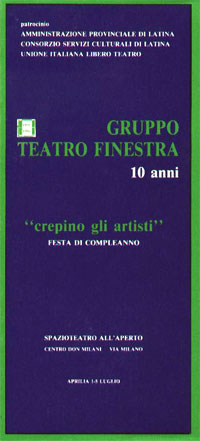

|  |
festa di compleanno
Aprilia 1 - 5 Luglio 1986
SPAZIOTEATRO ALL’APERTO
CENTRO DON MILANI VIA MILANO
PROGRAMMA
1 LUGLIO ore 21,15
Gruppo Teatro Finestra
COPIONE di N. Saito
2 LUGLIO ore 21,15
Camerata Barocca di Latina
CONCERTO
3 LUGLIO ore 18
Incontro-dibattito
LA CULTURA AD APRILIA "Vivere, Convivere, Sopravvivere"
Ore 20,30
Spaziomusica concerto
GRUPPI TRANSCATERS E FLESHY DREAMS
4 LUGLIO ore 21,15
Gruppo Teatro Finestra
L'UOMO DAL FIORE IN BOCCA di L. Pirandello
L'ULTIMO NASTRO DI KRAPP di S. Beckett
5 LUGLIO ore 20
SERATA FINALE con attori, musicisti, cantastorie, mimi, animatori.
Allestimento di una mostra con documentazione dell'attività del Gruppo Teatro Finestra dal 1976 al 1986